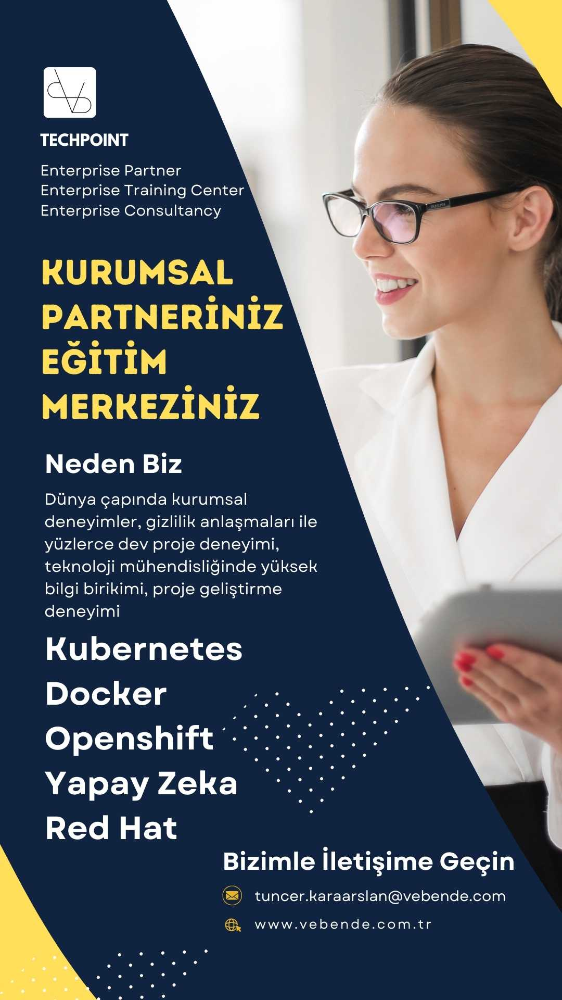
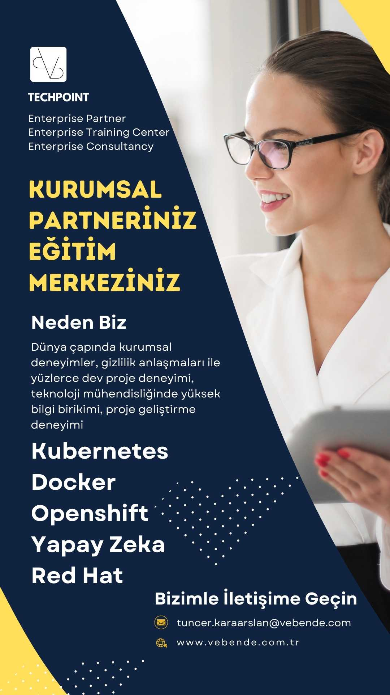
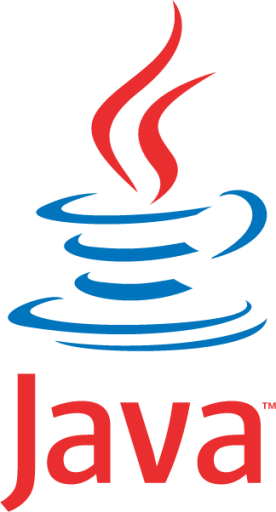

İLETİŞİM
Kurumsal Eğitimlerimiz ve Desteklerimizle Sizin Yanınızdayız
Size Özel Kurumsal Eğitimlerimizle Artık Olmadığı Kadar Güçlüsünüz!
Kubernetes, Red Hat, Openshift, Docker, Yapay Zeka ...
Sizin istediğiniz teknolojilerin eğitimlerini hazırlıyoruz. Ayrıca sizin
projelerinizde sizinle birlikte çalışıyoruz. Bizden eğitim, destek, kurulum, devsecops ve tüm
teknolojik konularda
birlikte çalışmalar talep edebilirsiniz. Bizden teklif isteyin.
2000 yılından günümüze .NET Yetkin İş Ortaklığı, yazılım geliştirme taleplerinizde
davetlerinizi bekliyoruz.
SİZE SÖZÜMÜZ, ARTIK YALNIZ DEĞİLSİNİZ, HER ZAMAN
YANINIZDAYIZ.
Sizinle çalışmak için sabırsızlanıyoruz. Lütfen bizimle Linkedin, E-Posta ya da WhatsApp üzerinden iletişime
geçin.
SİZE SÖZÜMÜZ, ARTIK YALNIZ DEĞİLSİNİZ, HER ZAMAN
YANINIZDAYIZ.
Sizinle çalışmak için sabırsızlanıyoruz. Lütfen bizimle Linkedin, E-Posta ya da WhatsApp üzerinden iletişime
geçin.
Eğitimlerimizi keşfetmeye hazır mısınız? Size piyasadaki yaygın olarak verilen program eğitimleri vermiyoruz. Sizi dinliyor ve size özel eğitim içeriklerini hazırlıyoruz.
5 günlük ve 12 günlük eğitim formatlarımız size farklı konfor ortamları sağlıyor.
Danışmanlık ve gizlilik çerçevesinde kontratlı çalışmalarımız ile teknolojik dönüşümünüzde sizinle birlikte süreçlerinize dahil oluyoruz ve birlikte çalışıyoruz.
Uzmanlarımızın deneyimleri sizin yanınızda. Kurumsal değişiminizde yapacağınız IT yatırımlarınızda sizlere danışmanlık desteği sağlıyoruz. İnşaa edeceğiniz mimaride tüm hands-on scriptlerin üretilmesinde ve kurulumlarda sizlerle birlikte çalışıyoruz. Size uzun yıllar sürecek eğtim, danışmanık ve destek hizmetleri sunuyoruz. Yeni ekip üyelerinizin yetiştirilmesinde sizlere destek oluyoruz.
DANIŞMANLARIMIZ
İki danışman ve 60 yıla yakın deneyim. Dünyadaki pek çok büyük projede ve firmalarda yer almış proje deneyimlerine sahip kurumsal seviyede danışmanlarımız. Projelerinizde birebir iki danışmanımızla da çalışıyorsunuz.
HİZMETLERİMİZ
Askeri Standartlarda Kubernetes: Kurumsal Danışmanlık, Kurulum, Destek, Eğitim
-
# Eğitim Hizmetlerimiz
Günümüzün yeni teknolojileri, mimarileri, kurulması gereken alt yapılar, yeni yazılım geliştirme yöntemleri ... bunlar gibi çok fazla gereksinim artık şirketlerin gereksinimleri haline geldi. Ayrıca günümüzün en büyük sorunlarından siber güvenlik sorunları, bu doğrultuda doğru inşaa edilmesi gereken alt yapılar, yazılım geliştirme süreçleri, devsecops süreçleri ve sürekli eğitimler ile şirketlerinizi güçlendirmeniz gerekiyor. Eğitimlerimiz ve danışmanlık hizmetlerimiz ile bu süreçlerinizde her zaman sizlerin yanındayız.
Günümüzden artan etkileşimli web ve mobil projeler, beraberinde ortaya çıkan yüksek trafik ve yönetilmesi gereken alt yapı mimarilerinin optimizasyonu ve verimlilik. Ayrıca ortaya çıkan siber güvenlik sorunlarıda dikkate alınması gereken en önemli konu. Peki herşeyi doğru yaptığınıza emin misiniz? Sadece denetimler için checklistlerini birlikte çalışarak üretmenizi sağlayabilir, sistemlerinizin kontrollerini sağlayabiliriz. Periyodik olarak güvenlik kontrollerini sağlayabilir, check listlerinizi güncellemenize yardımcı olabiliriz. Dikkatlerden kaçan noktalarda gol yemekten kurtulursunuz. Dikkatli olun, gol yediğinizde telafisi mümkün olmayacak zararlar ortaya çıkabilir.
Kubernetes mimarisi sayesinde kurumunuzun tüm kaynaklarını tek bir mimari üzerinde yönetebilmenizi sağlıyoruz. Red hat, Kubernetes ve Openshift, DevSecOps ve diğer tüm araçlar birbirleriyle uyum içinde çalışacak hale getiriliyor. Alt yapınızdaki tüm kaynakları (disk, cpu, ram, network, gelen talep yönetimi, hatta kuyruklarınızda biriken iş yüküne göre daha fazla consumer, ...) ölçümleyebilmenizi ve yönetebilmenizi sağlayan bir mimari. Multi cluster, multi master, multi worker, multi region ... ülkemizdeki kurumlarımızın artık sahip olması gereken mimarilerdir. Günümüzün ve gelecek yüzyılın Türkiyesi için sahip olmamız gereken alt yapı mimarilerini bizimle gerçekleştirebilirsiniz. Biz her zaman sizin için hazır olacağız. Ekiplerinizi bu mimarileri yönetmeleri için hazırlayacağız. Kurulum, destek, güncellemeler, dokümantasyon ve eğitimler ile biz hep yanınızda olacağız.
Hazırladığımız eğitimlerimiz sürekli güncellenmektedir. Eğitimlerimizi sizin kurumsal logolarınız ile hazırlıyoruz. Eğitimlerden önce sizinle yaptığımız toplantılara göre eğitim içeriklerimiz ve senaryolarımız sizin şirketinize göre düzenleniyoruz. Eğitimlerimizi sizin de ekipleriniz ile etkileşimli kod yazarak ve birlikte senaryolar üreterek işliyoruz. 360 derece bakış açısıyla eğitimler işleniyor. Hatalar ve çözümleri, logların analizleri, sistemin sağlık kontrolleri, paketleme ve yayınlama, kodlama, deneyim ... katılımcılar eğitimdeki ele alınan teknolojilerin her anını yaşıyorlar.
Enterprise Ölçekte Kubernetesi Kimler Kurmalı: Bilişim sektöründe dikkatsizce davranılan bir konu! Minikube ya da hazır scriptler ile kubernetes kurarak development ve devops süreçlerini test amaçlı kullanmış deneyimli bilişim uzmanlarınız, aynı deneyimler ile enterprise ölçekte kubernetes kurarak kurumlarına büyük güvenlik zaafiyetleri verebilirler. Askeri standartlarda bir kubernetes nasıl kurulur, nelere dikkat edilir, dışarıdan alınan paketlerin güvenlik incelemeleri nasıl yapılır, güvenlik otomasyonu nasıl kurulur, zaten kullanımda olan ama deprecate olmuş, güvenlik sorunları tespit edilmiş paketler nasıl incelenenir, güvenlik müdahaleleri nasıl yapılır, acil müdahale anında neler yapılmalıdır, afet durumları için önceden yapılması gereken ve hazırlanılması gereken konular nelerdir. Loglar ve alarmlar nasıl aktifleştirilir, sürekli kaynaklar nasıl monitör edilir. İşte tam olarak bu ve benzeri konuları tartışarak etkileşimli ve katılımcı bir eğitim içeriği ile birlikte inceliyoruz. Sizlere dünya çapındaki bankaların, askeri kurumların ve nato gibi yüksek güvenlik gerektiren kurumlarda dikkate alınan analizleri masaya getiriyoruz ve birlikte tartışıyoruz. Kurulacak tüm sistemlerimizde her araç tek tek analiz ediliyor. Bu kadar detaylı bir eğitim ve danışmanlığını başka kimden alabilirsiniz ki. Doğru analiz edilmeyen ve yetkin bir ekip tarafından kurulmayan Kubernetes ise, problemler yumağı haline gelecektir. Tüm yatırımınızı yeniden kurmak zorunda kalabilirsiniz. Belki de o ana kadarki tüm üretimizinizde size büyük maliyetler getiremesine katlanarak.
Bizimle Kubernetes konusunda gönül rahatlığı ile çalışabilirsiniz. Sizinle planlama, eğitim, dokumantasyon, kurulum ve hands-on konularında çalışabiliriz. Dünyanın ileri gelen kurumları ile ilgili deneyimlerimizi gizlilik anlaşması ile birlikte incelemenize sunabilir ve çalışmalarımızı kısıtlı bir seviyede açabilir, belgeleyebiliriz.
Eğitimlerimiz canlı ve eğitmenler ile birlikte yapılıyor. Uzaktan eğitim ve destek için tüm araçları eğitmenlerimiz sağlıyor. Eğitimlerimiz iki farklı eğitim formatına uygun olarak hazırlanıyor. İki eğitim formatı arasındaki temel fark,
- Kısa olan formatta eğitmen konuyu anlatır ve kodları yazar, katılımcılar eğitmenle birlikte katılım sağlar.
- Uzun formatta eğitmen konuyu anlatır ve senaryoyu ortaya koyar, her bir katılımcı kodu yazar, eğitmen onların makinelerindeki kodu grup önünde inceler ve birlikte çalışır. Son olarak eğitmen doğru senaryo kodlamasını yapar
Tam etkileşimli bol hands-on (uygulamalı çalışmalar) içeren canlı uzaktan eğitim. -
# Danışmanlık Hizmetlerimiz
Yerinden ve uzaktan danışmanlık ve destek paketlerimizi tercih edebilisiniz. Yanlız değilsiniz, her an size destek oluyoruz. Her zaman yanınızdayız. Partneriniz olarak sizin yaşayabileceğiniz her türlü sorunda yardımcı olmak için her zaman yanınızdayız.
Kuracağınız yeni teknolojilerde sizinle birlikte yerinde çalışmalar yapıyoruz. Aylarca sizinle birlikte mesai yapıyoruz. Sizinle kuruma giriyoruz, sizinle yemeğe çıkıyoruz, sizinle mesaiyi bitiriyoruz. Hem de dünyanın neresinde olursanız olun. Sürekli sizin yanınızdayız ve çalışmaları sizinle birlikte yapıyoruz.
Sürekli sizin için bizlerde arge yapıyor ve deneyimlerimizi arttırıyoruz. Biz de her gün kendimizi güncelliyoruz. Sizin senaryolarınız ve sizin teknolojileriniz ya da sahip olmak istediğiniz teknolojilerinizle ilgili içerikler ve kurumsal eğitimlerimizi hazırlıyoruz. Sizin projelerinizde bizler yer alıyor ve sizlere uzun yıllar sürecek iş planlarımız ile tam destek veriyoruz. Her türlü dokümantasyonu yüksek standartlarda hazırlıyoruz.
Yazılım geliştirme süreçleri için devsecops araçlarını, entegrasyonlarını, kubernetes mimarilerinizi, eğitimlerinizi, dokümantasyonlarınızı sizin için ve sizinle birlikte hazırlıyoruz. Askeri standartlarda yüksek güvenlikli mimarilerinizin kurulumlarınızda sizinle birlikte çalışıyoruz. Kurulumlarınızı gerçekleştiriyor ve tüm ekip üyelerinizi her zaman eğitmeye devam ediyoruz.
Ülkemizin en kritik kaynaklarından birisi de insan kaynakları ve teknoloji transferi. Bu konuda ülkemiz dışındaki iş ortaklıkları ile artık devam edilemez. Bu söz devlet kaynaklarına ait. Biz bu görüşe uygun olarak ülkemize dünyanın en gelişmiş teknolojilerinde danışmanlık hizmetleri sağlamak için var gücümüzle çalışıyoruz. Her gün
-
# Kontrat Hizmetlerimiz
Tam gizlilik kapsamında tümüyle sizin içinizde sizin için çalışıyoruz. Tam mesai yapıyor ve aylarca süren çalışmalarda sizin ekibinizdeki personel olarak görev alıyoruz.
Kuracağınız yeni teknolojiler için sizinle birlikte toplantılara katılıyor, deneyimlerimiz ve bilgimizle karar almanıza yardımcı oluyoruz. Bu süre içinde tümüyle size atanmış kaynaklarımız sizin projenizde danışmanlık, hands-on üretimi, kurulum, teknik dokümantasyon ve eğitim hizmetleri sunmaktadır.
Kontrat hizmetlerini gizlilik nedeni ile referanslarımız arasında kullanmıyoruz.
Kubernetes, devsecops, cybersecurity gibi tüm iş süreçlerinizde kontratlarımız çerçevesinde sizinle birlikte çalışıyoruz. Sizin yazılım projelerinizde pipeline kurulumları, eğitimlerimi, projelerinizdeki microservis ürünlerinin üretimi, personel eğitimleriniz, yatırımlarınızda toplantılarınıza katılarak teknik bilgi aktarımı, sistem destek hizmetleri gibi tüm hizmetlerinizde sizinleyiz. Bu çalışmalar gizlilik kapsamında yapılmaktadır.
Bizimle yıllık eğitim paketleri anlaşması yapabilirsiniz. Yıl içerisinde eğitim paketlerimizden istediklerinizi seçip kullanabilirsiniz. Yıl içerisinde sürekli yeni eğitim paketlerimiz hazırlanır ya da var olan eğitimlerimiz güncellenir. Bizimle klasik bir eğitim zamanı geçirmezsiniz. Eğitim modelimizde tam etkileşimli bir model ve sizin senaryolarınız ile hazırlanır. Eğtim anında etkileşimli yapılır. Bu eğitimi ancak çok deneyimli uzmanlar sağlayabilir. Biz size en deneyimli eğitimlerin sözünü veriyoruz.
Bizimle outsource kaynak üzerinde de anlaşma yapabilirsiniz. Sizin istediğiniz özellikle ekipleri size sağlıyoruz. Her zaman yedekli insan kaynakları ile projelerinizi sürekli izliyor, ekiplerimizi sizin konularınıza uygun olarak yetiştirmeye devam ediyoruz. Siz ekip sorunları ile ilgilenmiyorsunuz. Siz işinizi yönetin ve projelere taleplerini analiz edin. Biz ihtiyaçlarınıza uygun yazılımların geliştirilmesini sağlıyoruz. Analiz, dokümantasyon, yazılım geliştirme, güvenlik zaafiyetleri analizleri ve giderilmesi, test süreçleri, yayına alınması ve sürekli gözlem ve destek ile sistemlerinizin her zaman güvenle çalışmasına garanti veriyoruz. Geliştirilen yazılımlarınızı sürekli güncel tutma ve güncelleme işlemlerinizi yerine getiriyoruz. Gizlilik anlaşması kapsamında sizinle analiz toplantılarına deneyimli uzman ekip arkadaşlarımızın katılmasını sağlıyor, size dedice ettiğimiz ekip üyelerinin en verimli üretimler yapmasını sağlıyoruz.
-
# Yazılım Hizmetlerimiz
2000 yılından günümüze .NET Yetkin İş Ortağı olarak ülkemizde ve dünya çapında yüzlerce büyük projede deneyimine sahibiz.
Kurumunuzun yazılım projelerinde yer almak isteriz. DevSecOps süreçlerine uygun yazılımlar geliştiriyoruz. Microservis mimarisi ile ölçeklenebilir yazılımlarımız sayesinde yüksek trafikli ya da yüksek iş kapasitesine sahip ürünleri üst düzey standartlarda geliştiriyoruz. Ürün teslimatlarında sizin bildirdiğiniz repolar üzerinden teslimatlar gitops süreçlerinize entegre teslimatlar yapıyoruz. Teknik doküman, eğitim, kullanım kitapları ve destek araçları hazırlıyoruz.
Özellikle enerji sektöründeki iş ortaklıklarımız sayesinde sizler için harika çözümler üretiyoruz. Sizin ERP sistemlerinize entegre faturalandırla yazılımlarında çok iyiyiz. Enerji sektörü için taleplerinizi iletin. Sizin çok iyi tanıdığınız çözüm ortaklarımız ile sizin için çalışalım. Eğitim, dokümantasyon, yazılım geliştirme, servis hizmetleri gibi pek çok konuda size hizmetler üretebiliriz. Eğer şirketinize özel head-end sistemi geliştirmek istiyorsanız, sizin için bu sistemleri üretebiliriz. Uzaktan okuma, Tedaş şartnamesine uygun verilerin işlenmesi, büyük veri yönetimi gibi pek çok konuda sizlere sizin için özel çözümler üretebiliriz. Sektördeki tüm rakiplerinize fark atabileceğiniz özel çözümler sağlayabilirsiniz.
Aklınızda çok değerli çözümler var, ama bunları yazabilecek ekibiniz ya da çalışabileceğiniz partneriniz yok, bizimle iletişime geçin. Sizin için çok çeşitli çözümler üretebiliriz.
Akıllı sayaç MASS projeleriniz için sizinle çalışmayı bekliyoruz. Sahadaki milyonlarca sayacınızı bile rahatlıkla yönetebileceğiniz harika çözüm önerilerimiz var.
Akıllı sayaç sistemleriniz, çevre ülkelerde kullanılan prepaid ödeme yöntemli su ve enerji sistemleri için bizimle iletişime geçebilirsiniz. Size yüksek güvenlikli headend sistemleri geliştirebilir, müşteriniz olan ülkelerdeki headend sistemleri geliştirilmesinde tam destek sağlayabiliriz.
-
# Enerji Sektörüne Özel Hizmetlerimiz
Akıllı sayaçlar, Tedaşın yeni şartnameleri, değişen enerji sektörü müşteri ve ürünleri özel çözümlerin üretilmesi fırsatlarını da beraberinde getirmektedir. MASS kapsamındaki Head-End çözümlerinizi sizinle birlikte geliştirebilir ve ihtiyacını olan her türlü hizmeti sağlayabiliriz.
Uzaktan okuma, görev yükleme, veri parçalama, analizi, büyük veri yönetimi, analizler gibi çok fazla süreci tek bir alt yapı ile geliştirmenizi sağlayabiliriz.
Saha denetimleri için özel mobil uygulamalar geliştirebiliriz.
Sizin için size özel head-end sisteminizi geliştirebiliriz.
Tüm sektör ürünlerinizin eğitimlerinizi sizlere verebiliriz.
Enerji sektöründe büyük deneyime sahibiz. Sizinle birlikte yapabileceklerimizi biliyoruz ve çok heyecanlıyız.
-
# Askeri Standartlarda Kubernetes Hizmetlerimiz
Askeri standartlarda Kubernetes hizmetimiz; yüksek güvenlik, erişilebilirlik, ölçeklenebilirlik ve dayanıklılık gereksinimlerini karşılayan bir altyapının tasarımını, dokümantasyonunu ve uygulamasını içerir. Ayrıca, ekip eğitimleri ve sürekli destekle çözümümüzü daha da güçlendiriyoruz. Gelecekteki güvenlik zaayifetlerine karşı sürekli korumaya devam ediyoruz.
1. Güvenlik Önlemleri
- Ağ Güvenliği ve İzolasyonu: Zero Trust mimarisi benimsenir. Ağ trafiği mikro segmentasyon ile ayrıştırılarak yalnızca gerekli hizmetlerin iletişim kurmasına izin verilir.
- Kimlik ve Erişim Yönetimi (IAM): Role-based Access Control (RBAC) ile erişim hakları titizlikle yönetilir. Multi-Factor Authentication (MFA) entegrasyonu sağlanır.
- Veri Şifreleme: Hareket halindeki veriler TLS ile, duran veriler ise ETCD üzerinden şifreli olarak saklanır.
- Güvenlik Politikaları: Pod Security Policies (PSP), Network Policies ve Security Context yapılandırmaları ile Kubernetes kaynakları için kapsamlı güvenlik sağlanır.
- Denetim ve İzleme: Kubernetes Audit Logs etkinleştirilir ve güvenlik olayları sürekli olarak izlenip alarm mekanizmalarıyla desteklenir.
2. Yüksek Erişilebilirlik ve Dayanıklılık
- Cluster Yedekliliği: Multi-master ve multi-worker düğümleri, yüksek erişilebilirlik (HA) sağlamak amacıyla yedekli ve dengeli bir şekilde dağıtılır.
- Multi-Region ve Multi-Cluster Yapılandırması: Kritik uygulamalar için birden fazla coğrafi bölgede yedekleme ve felaket kurtarma (Disaster Recovery) planları titizlikle tasarlanır.
- Yük Dengeleyici (Load Balancer): İç ve dış yük dengeleme ihtiyaçlarını karşılamak için güvenilir ve ölçeklenebilir çözümler uygulanır.
3. Standartlara Uygunluk
- Askeri Standartlar: NATO, STANAG ve yerel askeri standartlar (örneğin, Türkiye için MSB direktifleri) doğrultusunda kurulum ve yapılandırmalar gerçekleştirilir.
- Regülasyon Uyumluluğu: Kişisel veriler veya askeri hassas veriler üzerinde çalışılması durumunda, GDPR, KVKK ve benzeri yasal düzenlemelere tam uyum sağlanır.
4. İzleme ve Güncelleme
- Güvenlik İzleme: Zabbix, Prometheus ve Grafana gibi araçlar kullanılarak sistem performansı ve güvenlik açıkları sürekli olarak izlenir.
- Otomatik Güncellemeler: Kubernetes bileşenleri ve konteyner imajları için güvenlik yamaları düzenli bir şekilde uygulanır.
- Kontrol ve Yönetim: ArgoCD veya FluxCD gibi GitOps araçlarıyla yapılandırmalar etkin bir şekilde yönetilir.
5. Altyapı Sertifikasyonları
- Donanım Sertifikasyonu: Kullanılan fiziksel sunucuların askeri standartlara uygun sertifikalara sahip olması sağlanır.
- Container Güvenliği: Container imajları, Trivy veya Clair gibi araçlarla taranarak yalnızca güvenilir registrylerden yüklenir.
6. Askeri Standartlarda İzleme Loglama ve Alarm
- İzleme ve Alarm Tetikleme: Prometheus + Grafana, ELK Stack (Elasticsearch, Logstash, Kibana), Fluentd/Fluent Bit
- Güvenlik: OPA, Trivy, Clair, Pod Security Policies (PSP)
- Log İzleme ve Yönetim: Zabbix, Auditd, Kubernetes Audit Logs, Syslog/Rsyslog
- GitOps ve Sürekli Dağıtım: ArgoCD, FluxCD
- Yedeklilik ve HA: Multi-master, Multi-worker yapı, Load Balancer, Multi-Region/Cluster
- Güvenlik ve Uyum: HSM, GDPR/KVKK/Regülasyon Uyumu
6. Askeri Standartlarda Rancher ile Multi Worker Kubernetes
- İzleme ve Alarm Tetikleme: Prometheus + Grafana, ELK Stack (Elasticsearch, Logstash, Kibana), Fluentd/Fluent Bit
- Güvenlik: OPA, Trivy, Clair, Pod Security Policies (PSP)
- Log İzleme ve Yönetim: Zabbix, Auditd, Kubernetes Audit Logs, Syslog/Rsyslog
- GitOps ve Sürekli Dağıtım: ArgoCD, FluxCD
- Yedeklilik ve HA: Multi-master, Multi-worker yapı, Load Balancer, Multi-Region/Cluster
- Güvenlik ve Uyum: HSM, GDPR/KVKK/Regülasyon Uyumu
7. Eğitim ve Süreçler
- Personel Eğitimi: Sistemi yönetecek personel, askeri gereksinimlere uygun olarak Kubernetes ve güvenlik konularında kapsamlı bir eğitim alır.
- Dokümantasyon: Yapılandırmalar, prosedürler ve güncellemeler eksiksiz ve detaylı bir şekilde dokümante edilir.
EĞİTİMLERİMİZ
Unutmayın, tüm eğtim danışmanlık ve partnerlik hizmetlerimizi size özel hazırlıyoruz.
-
# Kubernetes: Modern Altyapılarınız İçin Güçlü ve Kalıcı Çözümler
🔹 Kurumsal Kubernetes Kurulumlarında Güçlü Destek: Altyapınızı bir adım öteye taşımak için yanınızdayız! Kurumsal Kubernetes kurulumlarınızda her aşamada size rehberlik ediyor, güvenli ve ölçeklenebilir çözümler sunuyoruz. İş süreçlerinizin verimliliğini artırın, geleceğe sağlam adımlarla ilerleyin.
🔹 Özel Eğitim Programları: Ekiplerinizin Yetkinliklerini Zirveye Taşıyın! Sistem, güvenlik ve yazılım ekiplerinize özel eğitimlerle, iş gücünüzü güçlendiriyoruz. Teorik bilgiden çok, gerçek dünyada uygulamaya dayalı, size özel içerikler sunuyoruz. Bu eğitimlerle, ekipleriniz sadece bilgi edinmekle kalmaz, sahada daha etkili olur ve daha hızlı çözümler üretir.
🔹 Uygulamalı Hands-on Çalışmalar: Pratik deneyimlerle altyapınızın yönetimini daha verimli hale getirin! Kubernetes hands-on ve Docker hands-on eğitimlerimizle, uygulamalı çalışmalar sayesinde gelişmiş beceriler kazanabilir, operasyonel süreçlerinizi profesyonel bir düzeye taşıyabilirsiniz. Zorluklarla başa çıkmanın ve altyapınızı en üst seviyede yönetmenin yolunu öğrenin.
🔹 Güvenli ve Güçlü Yönetim Çözümleri: Bakım ve yönetim süreçlerinizdeki tüm zorlukları aşmak için bizimle çalışın. Kubernetes altyapınızı her zaman güvende tutun ve operasyonel verimliliğinizi artırarak rekabet avantajı kazanın.
🔹 Neden Bizi Tercih Etmelisiniz? Kubernetes altyapınız için güçlü bir iş ortağı arıyorsanız, doğru yerdesiniz! Dünyanın en güçlü kurumsal işletim sistemlerinde uzman kadromuzla yanınızda olup, sizi geleceğe taşırız. Bugünden itibaren daha güçlü bir altyapı, daha güvenli bir iş süreçleri için bizimle adım atın. Hemen bize katılın ve farkı yaşayın! 🚀
-
# Red Hat: Güçlü Altyapılar İçin İleri Seviye Eğitim ve Destek
🔹 Red Hat altyapınız için tüm seviyelerde uygulamalı çalışmalar ve kurumsal eğitim içeriklerimizle yanınızdayız. Deneyimli eğitmenlerimizle, Red Hat sistemlerinizi daha verimli yönetmek için pratik bilgilerle donanmış, derinlemesine eğitimler alabilirsiniz.
🔹 İhtiyaçlarınıza özel Docker hands-on ve Kubernetes hands-on eğitimleriyle, modern container çözümleri hakkında uzmanlık kazanabilir, Red Hat kurumsal altyapınızı en üst düzeye taşıyabilirsiniz. Her seviyede eğitim programlarımızla, ekiplerinizin becerilerini güçlendiriyor ve size özel çözümler sunuyoruz.
🔹 Red Hat sistemleri ile iş süreçlerinizi hızlandırın, güvenli ve yüksek performanslı altyapılar kurun! Sizi bekliyoruz.
-
# DevSecOps
🚀 Geliştirme, Güvenlik ve Operasyon artık bir arada, hem de Kubernetes mimarisi üzerinde! 🌐
⚙️ İleri seviye DevOps konuları ve onlarca araç ile yüzleşin. Zor ama etkileyici bir yolculuk. 🚧 Eğitimi ve uygulaması zorlu olabilir, ancak doğru mentorluk ile şirketinize katacağı değer, hayal ettiğinizden bile büyük! 💡
-
# Yapay Zeka 🚀
🌟 Kurumsal yapay zeka iş modelleri ve uçtan uca tam otomasyon süreçleriyle işlerinizde ölçülebilir kalite ve hız farkı yaratıyoruz.
🎓 Her seviyeye uygun özel eğitimler ve etkili seminerlerle kurumsal farkındalığınızı artırmaya yardımcı oluyoruz.
-
# Proje Yönetimi Yöntemleri 🚀
Tüm proje yönetimi yaklaşımları birbirinden değerli olup, birisi diğerinin yerine geçemez. Her biri, belirli bir sorunun çözümü için geliştirilmiştir.
- ✔️ Agile: Esneklik ve hızlı adaptasyon üzerine kurulu.
- ✔️ DevOps: Geliştirme ve operasyon süreçlerini birleştiren modern bir yaklaşım.
- ✔️ Future Driven Development: Geleceği şekillendiren yenilikçi yöntemler.
- ✔️ Validation & Verification - V Model: Doğrulama ve geçerleme üzerine kurulu sistematik proje yönetimi.
- ✔️ RAD: Hızlı uygulama geliştirme odaklı bir yöntem.
-
# Enerji Sektörü Özel Eğitimi 🔌
🚀 Sizin sorunlarınızı biliyoruz. Size özel, sektöre uyumlu eğitim içeriklerimiz ile yanınızdayız!
🌟 Binlerce, yüzbinlerce ve hatta milyonlarca sayacı gerçek zamanlı yönetecek handend sistemlerinizi nasıl geliştirmeniz gerektiğini biliyoruz.
🌐 Sahadaki tüm online cihazlarla kusursuz bir iletişim altyapısı kurmanız için gereken adımları paylaşıyoruz.
📊 Devasa boyuttaki günlük verileri işleyerek doğru kararlar almanız için en iyi yöntemleri sunuyoruz.
🛠️ Sizin için en uygun çözümleri özel olarak tasarlıyoruz.
🔑 Eğer enerji sektöründe karar verici bir teknoloji lideriyseniz, hemen bizimle iletişime geçin. Şirketinize güç katın, sektörün geleceğine yön verin!
-
# Microservis Mimarilerinde Yazılım Geliştirme ve Yönetimi
Microservis teknolojilerini aşağıdaki diller ile nasıl geliştirebileceğinizi öğrenin:
- Go: Performans odaklı microservisler geliştirme
-
 Python: Hızlı prototipleme ve veri odaklı servisler
Python: Hızlı prototipleme ve veri odaklı servisler
-
 C# .NET: Kurumsal uygulamalar için sağlam çözümler
C# .NET: Kurumsal uygulamalar için sağlam çözümler
-  Java Spring: Geniş ölçekli sistemlerde güvenilirlik
-
# İleri Seviye Siber Güvenlik Eğitimleri 🔒
Tüm kurum çalışanları için temel güvenlik farkındalığı
Güvenlik Uzmanları ve Sistem Mimarları için ileri teknikler
Yöneticiler için stratejik güvenlik yönetimi
-
# Yapay Zeka Destekli Müşteri Deneyimi Geliştirme
KVKK GDPR uyumlu yapay zeka geliştirme
Microservisler ile uyum içinde müşteri temsilcileri ile yapay zeka destekli müşteri deneyimi
-
# NLP ile sohbet botları
Whatsapp ile entegre kişiye özel kurumsal asistanlar
Kişiye özel ürün kataloglarının üretilmesi ve tek tek müşteriye özel online pdf üretimi, gönderimi ve müşteri iletişimlerinin yönetilmesi
Sesten metine işleme ve sorguların kurumsal kaynaklarda işlenmesi ve sonuçların müşteriye iletilmesi
Sürekli öğrenme ile uzmanlık ve kurumsal zekanın üretilmesi
Yöneticilerin günlük raporlarının hazırlanması
Günlük yapılması gerekli işlerin planlanması icra edilmesi ya da yapılan görevlerin kontrol edilip raporlanması
Güvenlik konusunda izleme, analiz etme ve raporlama yeteneklerinin geliştirilmesi
Kurumsal olarak sizlerin hikayelerinize uygun ai çözümlerinin üretilmesi, eğitimi ve işletilmesi desteği
-
# Yapay Zeka Destekli İnsan Kaynakları Çözümleri
İşe alım süreçlerinde dönüşüm
Çalışan performansları ve yetkinliklerin optimizasyonu
Etik veri güvenliği
Kritik pozisyon analizi ve kurum içi çalışanların kurumsal analizi, eğitim planlanması, yetkinlik geliştirme
-
# Akıllı Şehir Yönetimi ve Planlamada Yapay Zeka
Ulaşım ve Trafik Yönetimi
Akıllı Aydınlatma Yönetimi
Akıllı Tarihi Şehir
Akıllı Su Yönetimi
Veriye Dayalı Alt Yapı Planlaması
Akıllı Sağlık İzleme Sistemi
Anketler ve Yapay Zeka Yaklaşımları ile Planlama
Buradaki tüm içerikler Vebende A.Ş. ticari içerikleri olarak
üretilmekte ve kurumsal eğitim ve destek paketleri olarak sunulmaktadır.
Tüm içerikler
Tuncer KARAARSLAN tarafından hazırlanmıştır.
İçerikler dünyanın en büyük
firmalarındaki deneyimleri altında hazırlanmış ve saha deneyimi içeren içeriklerdir.
Tüm eğitim
içeriklerimiz github repolarda üretilmekte, eğitmen içerikleri de github repolarda saklanmaktadır.
Eğitim sırasında tüm içerikler bir kopyası (fork) alınarak katılımcılara açılmakta ve katılımcılara
yüzlerce hands-on (uygulamalı çalışmalar) çalışma hayat boyu erişime açılmaktadır. Hem de eğitim ve
çalışmalarda eğitmenle
birlikte alınan tüm özel notlarıyla birlikte.
Eğitimler, Kurumsal Eğitimler, Kubernetes, Docker, RedHat, DevSecOps, Yapay Zeka, Siber Güvenlik, Proje Yönetimi, HandsOn Eğitimler, NLP, Enerji Sektörü Eğitimleri, Teknoloji, Hizmetler, Kubernetes Mimarisi, Multi Cluster, Microservisler, IT Danışmanlık, Altyapı Optimizasyonu, DevOps, Akıllı Şehir Yönetimi, İnsan Kaynakları Çözümleri, Veri Güvenliği, Danışmanlık, Kurumsal Danışmanlık, Gizlilik Kontratları, Uzaktan Destek, Teknoloji Kurulumu, Proje Yönetimi Danışmanlığı, Yazılım Geliştirme, .NET, Python, Go, Java Spring, Yapay Zeka Çözümleri, Kurumsal Hizmetler, Partnerlik, Kurumsal Partnerlik, Destek, Proaktif Çözüm Ortaklığı Kubernetes, Kurumsal Kubernetes, Kubernetes Kurulumu, Kubernetes Destek, Kubernetes Partnerlik, Kubernetes Danışmanlık, Kubernetes Eğitim, Kubernetes Altyapı, Kubernetes Mimari, Kubernetes Yönetimi, Kubernetes Çözümleri, Kubernetes Cluster, Kubernetes DevOps, Kubernetes DevSecOps, Kubernetes Güvenlik, Kubernetes Uzaktan Destek, Kubernetes Modern Altyapı, Kubernetes HandsOn, Kubernetes Etkileşim, Kurumsal Mimari, Kurumsal Altyapı, Kurumsal Destek, Kurumsal Eğitimler, Kubernetes RedHat, Kubernetes OpenShift, Kubernetes Docker, Kubernetes Çoklu Cluster, Kubernetes Uyumluluk, Kubernetes Optimize, Kubernetes Güçlü Çözümler, Kubernetes Müşteri Başarı, Kubernetes Yazılım Desteği, Kubernetes Başarı Hikayeleri, Online Kubernetes, Kubernetes Hizmetleri, Kubernetes Danışmanlık Hizmetleri, Kubernetes Türkiye, Kubernetes Uzmanları, Kurumsal Çözümler Docker, Docker Kurulum, Docker Eğitim, Docker Destek, Docker Partnerlik, Kurumsal Docker, Container Teknolojileri, DevOps, DevSecOps, Altyapı Optimizasyonu, Kubernetes Entegrasyonu, Docker Kubernetes, Docker Consulting, Docker Danışmanlık, Kurumsal Altyapı, HandsOn Eğitimler, Docker Scaling, Container Orchestration, Siber Güvenlik, Cloud Native, Multi Cluster Docker, Docker Monitoring, Docker Migration, Mikroservis Mimarileri, Continuous Integration, Continuous Deployment, Container Management, Docker Best Practices, Docker Pipeline, Docker Uzman Desteği, Proaktif Destek, Kurumsal Partnerlik, Docker Implementation, Cloud Integration, Hibrit Altyapılar, Yazılım Geliştirme, Docker Ecosystem, Kurulum Ve Destek, Docker Güvenliği, Uzaktan Destek, Kurumsal IT Çözümleri, Docker Enterprise, Teknoloji Danışmanlığı Sanallaştırma, Kurumsal Sanallaştırma, Virtualization, VMware, HyperV, Kubernetes, Containerization, Altyapı Sanallaştırma, Bulut Bilişim, Cloud Solutions, IT Danışmanlık, Kurulum Hizmetleri, Uzaktan Destek, Kurumsal Destek, Partnerlik, Sanallaştırma Eğitimleri, Virtualization Training, Proaktif Çözümler, Multi Cluster Yönetimi, Altyapı Optimizasyonu, Yük Dengeleme, Siber Güvenlik, Network Sanallaştırma, Sanallaştırma Teknolojileri, DevOps, DevSecOps, Kurumsal Partnerlik, Hibrit Bulut, Private Cloud, Public Cloud, Veri Merkezi Sanallaştırma, Sanallaştırma Mimari, Virtualization Strategy, Uzman Desteği, Yedekleme Çözümleri, Disaster Recovery, Kapsayıcı Yönetimi, High Availability, Uzaktan Çalışma Altyapısı, IT Modernizasyonu, Verimlilik Artışı, Performans İzleme, Güvenlik Yönetimi, KVKK Uyumluluğu, GDPR Uyumluluğu, Esneklik, Dijital Dönüşüm, Sanallaştırma Danışmanlığı, Online Destek, Hızlı Kurulum, Uzaktan Çözüm, Kurumsal İş Ortaklığı, Sürekli Destek, Yönetilebilir Altyapı, Global Destek, IT Çözümleri Yapay Zeka, AI, Yapay Zeka Çözümleri, AI Çözümleri, AI Model Geliştirme, Fine Tuning, AI Model Fine Tune, Makine Öğrenimi, Derin Öğrenme, AI Altyapısı, AI Entegrasyonu, Kurumsal AI, AI Proje Danışmanlığı, Yapay Zeka Danışmanlığı, AI Kurulum Destek, AI Optimizasyonu, AI Model Eğitimi, Kurumsal Dönüşüm, AI Platformları, AI Uygulama Geliştirme, AI Analitik, AI Model Dağıtımı, AI Model Hizmeti, AI Uyarlama, AI Uygulamaları, AI Hizmetleri, AI Destek, AI HandsOn, AI Danışmanlık, AI Uzaktan Destek, AI Eğitimleri, Kurumsal AI Entegrasyonu, AI Proje Geliştirme, AI Model Performansı, AI Şirket Çözümleri, AI Yazılım Geliştirme, AI Üretkenlik, AI Optimizasyon Hizmetleri, AI Partnerlik, AI İş Modelleri, Yapay Zeka Partnerlik, Yapay Zeka Danışmanı, AI Güvenlik, AI İş Ortaklığı, AI Entegrasyon Danışmanlığı, AI Proje Yönetimi, AI Proaktif Hizmetler, Yapay Zeka Verimlilik, AI İş Süreçleri, AI İnovasyon, AI Proje Eğitimi, AI İleri Seviye, AI Kurumsal Hizmetler, AI Paket Hizmetler, AI Platform Optimizasyonu, AI Uyarlanabilirlik, AI Rekabet Avantajı, AI Hedef Odaklılık, AI İş Büyütme, AI Şirket Gelişimi, AI İçerik Geliştirme Proje Yönetimi, Yazılım Geliştirme, API, Test, DevOps, Veritabanı Yönetimi, Çevik Proje Yönetimi, Docker, JIRA, Postman, GitHub Copilot, JetBrains, Studio 3T, AWS Elastic Beanstalk, Agile Metodolojisi, API Geliştirme, Kubernetes, DBeaver, Cloud Native, Mikroservis, Versiyon Kontrolü, Kod Tamamlama, Mobil Uygulama, CICD, Yazılım Testi, Kod İnceleme, Proje Takip Mikroservis, Servis Odaklı Mimari, API, Kubernetes, Docker, RESTful Servisler, Spring Boot, API Gateway, Otomasyon, Servis Keşfi, Event Driven Architecture, Kafka, Zookeeper, CI_CD, DevOps, Kapsayıcı Yönetimi, Veri Paylaşımı, Grafana, Prometheus, Cloud Native, Microservices Testing, Distributed Systems, Service Mesh, Helm Kurumsal Eğitim, Danışmanlık Hizmetleri, Eğitim Programları, Kişisel Gelişim, Yönetim Danışmanlığı, Eğitim Danışmanlığı, Online Eğitim, İş Geliştirme, Eğitim Stratejileri, Kariyer Gelişimi, Kubernetes, Red Hat, DevSecOps, Yapay Zeka, Siber Güvenlik, Proje Yönetimi, Hands-On Eğitimler, NLP, Enerji Sektörü Eğitimleri, IT Danışmanlık, DevOps, Blockchain Eğitimi, Veri Bilimi Bootcamp, Mobil Uygulama Geliştirme, Uzaktan IT Eğitimi
#Eğitimler #KurumsalEğitimler #Kubernetes #Docker #RedHat #DevSecOps #YapayZeka #SiberGüvenlik #ProjeYönetimi #HandsOnEğitimler #NLP #EnerjiSektörüEğitimleri #Teknoloji #Hizmetler #KubernetesMimarisi #MultiCluster #Microservisler #ITDanışmanlık #AltyapıOptimizasyonu #DevOps #AkıllıŞehirYönetimi #İnsanKaynaklarıÇözümleri #VeriGüvenliği #Danışmanlık #KurumsalDanışmanlık #GizlilikKontratları #UzaktanDestek #TeknolojiKurulumu #ProjeYönetimiDanışmanlığı #YazılımGeliştirme #.NET #Python #Go #JavaSpring #YapayZekaÇözümleri #KurumsalHizmetler #Partnerlik #KurumsalPartnerlik #Destek #ProaktifÇözümOrtaklığı #Kubernetes #KurumsalKubernetes #KubernetesKurulumu #KubernetesDestek #KubernetesPartnerlik #KubernetesDanışmanlık #KubernetesEğitim #KubernetesAltyapı #KubernetesMimari #KubernetesYönetimi #KubernetesÇözümleri #KubernetesCluster #KubernetesDevOps #KubernetesDevSecOps #KubernetesGüvenlik #KubernetesUzaktanDestek #KubernetesModernAltyapı #KubernetesHandsOn #KubernetesEtkileşim #KurumsalMimari #KurumsalAltyapı #KurumsalDestek #KurumsalEğitimler #KubernetesRedHat #KubernetesOpenShift #KubernetesDocker #KubernetesÇokluCluster #KubernetesUyumluluk #KubernetesOptimize #KubernetesGüçlüÇözümler #KubernetesMüşteriBaşarı #KubernetesYazılımDesteği #KubernetesBaşarıHikayeleri #OnlineKubernetes #KubernetesHizmetleri #KubernetesDanışmanlıkHizmetleri #KubernetesTürkiye #KubernetesUzmanları #KurumsalÇözümler #Docker #DockerKurulum #DockerEğitim #DockerDestek #DockerPartnerlik #KurumsalDocker #ContainerTeknolojileri #DevOps #DevSecOps #AltyapıOptimizasyonu #KubernetesEntegrasyonu #DockerKubernetes #DockerConsulting #DockerDanışmanlık #KurumsalAltyapı #HandsOnEğitimler #DockerScaling #ContainerOrchestration #SiberGüvenlik #CloudNative #MultiClusterDocker #DockerMonitoring #DockerMigration #MikroservisMimarileri #ContinuousIntegration #ContinuousDeployment #ContainerManagement #DockerBestPractices #DockerPipeline #DockerUzmanDesteği #ProaktifDestek #KurumsalPartnerlik #DockerImplementation #CloudIntegration #HibritAltyapılar #YazılımGeliştirme #DockerEcosystem #KurulumVeDestek #DockerGüvenliği #UzaktanDestek #KurumsalITÇözümleri #DockerEnterprise #TeknolojiDanışmanlığı #Sanallaştırma #KurumsalSanallaştırma #Virtualization #VMware #HyperV #Kubernetes #Containerization #AltyapıSanallaştırma #BulutBilişim #CloudSolutions #ITDanışmanlık #KurulumHizmetleri #UzaktanDestek #KurumsalDestek #Partnerlik #SanallaştırmaEğitimleri #VirtualizationTraining #ProaktifÇözümler #MultiClusterYönetimi #AltyapıOptimizasyonu #YükDengeleme #SiberGüvenlik #NetworkSanallaştırma #SanallaştırmaTeknolojileri #DevOps #DevSecOps #KurumsalPartnerlik #HibritBulut #PrivateCloud #PublicCloud #VeriMerkeziSanallaştırma #SanallaştırmaMimarisi #VirtualizationStrategy #UzmanDesteği #YedeklemeÇözümleri #DisasterRecovery #KapsayıcıYönetimi #HighAvailability #UzaktanÇalışmaAltyapısı #ITModernizasyonu #VerimlilikArtışı #Performansİzleme #GüvenlikYönetimi #KVKKUyumluÇözümler #GDPRUyumluÇözümler #Esneklik #DijitalDönüşüm #SanallaştırmaDanışmanlığı #OnlineDestek #HızlıKurulum #UzaktanÇözüm #KurumsalİşOrtaklığı #SürekliDestek #YönetilebilirAltyapı #GlobalDestek #ITÇözümleri #YapayZeka #AI #YapayZekaÇözümleri #AIÇözümleri #AIModelGeliştirme #FineTuning #AIModelFineTune #MakineÖğrenimi #DerinÖğrenme #AIAltyapısı #AIEntegrasyonu #KurumsalAI #AIProjeDanışmanlığı #YapayZekaDanışmanlığı #AIKurulumDestek #AIOptimizasyonu #AIModelEğitimi #KurumsalDönüşüm #AIPlatformları #AIUygulamaGeliştirme #AIAnalitik #AIModelDağıtımı #AIModelHizmeti #AIUyarlama #AIUygulamaları #AIHizmetleri #AIDestek #AIHandsOn #AIDanışmanlık #AIUzaktanDestek #AIEğitimleri #KurumsalAIEntegrasyonu #AIProjeGeliştirme #AIModelPerformansı #AIŞirketÇözümleri #AIYazılımGeliştirme #AIÜretkenlik #AIOptimizasyonHizmetleri #AIPartnerlik #AIİşModelleri #YapayZekaPartnerlik #YapayZekaDanışmanı #AIGüvenlik #AIİşOrtaklığı #AIEntegrasyonDanışmanlığı #AIProjeYönetimi #AIProaktifHizmetler #YapayZekaVerimlilik #AIİşSüreçleri #AIİnovasyon #AIProjeEğitimi #AIİleriSeviye #AIKurumsalHizmetler #AIPaketHizmetler #AIPlatformOptimizasyonu #AIUyarlanabilirlik #AIRekabetAvantajı #AIHedefOdaklılık #AIİşBüyütme #AIŞirketGelişimi #AIİçerikGeliştirme #KurumsalEğitimPaketleri #KurumsalKurulumDestek #Partnerlik #OnlineEğitim #TeknolojiEğitimleri #KurumsalDönüşüm #EğitimÇözümleri #KurumİçinEğitim #KişiyeÖzelEğitim #EğitimHizmetleri #KurumsalEğitim #EğitimVeDestek #UzmanEğitim #GelişmişEğitim #KurumİçinDanışmanlık #EğitimDestek #UzaktanEğitim #Eğitimİçerikleri #KurumsalTeknolojikDestek #EğitimDanışmanlık #ITEğitimleri #ProjeDestek #KurumsalTeknolojiÇözümleri #VerimliEğitim #AltyapıKurulumDestek #KurumsalÇözümler #YapayZekaEğitimi #KubernetesEğitimi #DockerEğitimi #RedHatEğitimi #DevOpsEğitimi #SiberGüvenlikEğitimi #TeknolojikDestek #ProaktifHizmet #TeknikDestek #MüşteriDestek #EğitimVeDanışmanlık #YazılımGeliştirmeDestek #DevSecOpsEğitimi #KurumsalYazılımEğitimi #ProjeYönetimiEğitimi #İleriSeviyeEğitim #KurumsalSürekliDestek #KubernetesAltYapıHazırlama #KubernetesKurulumu #AltYapıMimari #KubernetesEğitim #KurumsalEğitimPaketleri #KubernetesDestek #KurumsalKurulum #DevSecOpsEğitimi #KubernetesPartnerliği #KubernetesYönetimi #KubernetesEğitimVeDestek #KubernetesMimariTasarımı #ŞartnameHazırlama #TeknolojiKurulumu #KurumsalDestek #KubernetesDanışmanlık #KurumsalPartnerlik #YapayZekaEğitimi #İleriSeviyeEğitim #TeknikDestekHizmetleri #KubernetesSürekliDestek #KurumsalTeknolojiÇözümleri #OnlineEğitimPaketleri #KubernetesUzmanları #KurumsalTeknolojiEğitimi #KubernetesUygulamalıEğitim #ITAltyapıDestek #KubernetesVeDockerEğitimleri #GelişmişKubernetesÇözümleri #KubernetesEğitimProgramları #KurumsalProjeYönetimi #KubernetesAltYapıDanışmanlık #KubernetesProjeleri #SiberGüvenlikEğitimleri #KubernetesAltYapıDestek #KubernetesKurumsalPartner #AIandMachineLearning #CloudComputing #CybersecurityTraining #DevOpsCertification #BlockchainEducation #BigDataAnalytics #IoTTraining #AgileProjectManagement #PythonProgramming #AWSCertification #CloudSecurity #DataScienceBootcamp #ITCertifications #TechSkillDevelopment #DigitalTransformationTraining #ITILCertification #CiscoNetworkingAcademy #SoftwareEngineering #FullStackDevelopment #BlockchainTechnology #ArtificialIntelligenceCertification #DevSecOps #EthicalHacking #MobileAppDevelopment #RemoteITTraining #YapayZekaVeMakineÖğrenimi #BulutBilişim #SiberGüvenlikEğitimi #DevOpsSertifikası #BlockchainEğitimi #BüyükVeriAnalitiği #IoTEğitimi #AgileProjeYönetimi #PythonProgramlama #AWSSertifikası #BulutGüvenliği #VeriBilimiBootcamp #ITSertifikaları #TeknolojiBeceriGelişimi #DijitalDönüşümEğitimi #ITILSertifikası #CiscoAğAkademisi #YazılımMühendisliği #FullStackGeliştirme #BlockchainTeknolojisi #YapayZekaSertifikası #DevSecOps #EtikHacking #MobilUygulamaGeliştirme #UzaktanITEğitimi #ProjeYönetimi #YazılımGeliştirme #API #Test #DevOps #VeritabanıYönetimi #ÇevikProjeYönetimi #Docker #JIRA #Postman #GitHubCopilot #JetBrains #Studio3T #AWSElasticBeanstalk #AgileMetodolojisi #APIGeliştirme #Kubernetes #DBeaver #CloudNative #Mikroservis #VersiyonKontrolü #KodTamamlama #MobilUygulama #CICD #YazılımTesti #Kodİnceleme #ProjeTakip #Mikroservis #ServisOdaklıMimari #API #Kubernetes #Docker #RESTfulServisler #SpringBoot #APIGateway #Otomasyon #ServisKeşfi #EventDrivenArchitecture #Kafka #Zookeeper #CI_CD #DevOps #KapsayıcıYönetimi #VeriPaylaşımı #Grafana #Prometheus #CloudNative #MicroservicesTesting #DistributedSystems #ServiceMesh #Helm #Containerization #YükDengeleme #ServiceDiscovery #KapsayıcıOrkestrasyonu #KurumsalEğitim #Danışmanlık #KişiselGelişim #OnlineEğitim #EğitimHizmetleri #YönetimDanışmanlığı #EğitimProgramları #İşGeliştirme #KariyerGelişimi #EğitimStratejileri #Kubernetes #RedHat #DevSecOps #YapayZeka #SiberGüvenlik #ProjeYönetimi #HandsOnEğitimler #NLP #EnerjiSektörüEğitimleri #ITDanışmanlık #DevOps #BlockchainEğitimi #VeriBilimiBootcamp #MobilUygulamaGeliştirme #UzaktanITEğitimi